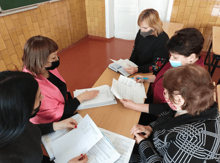

Протягом тижня за участі фахівців центру у закладах освіти Роменської ,Андріяшівської та Хмелівської ОТГ
Протягом тижня за участі фахівців центру у закладах освіти Роменської ,Андріяшівської та Хмелівської ОТГ
Протягом тижня за участі фахівців центру у закладах освіти Роменської ,Андріяшівської та Хмелівської ОТГ проведені засідання команд психолого-педагогічного супроводу дитини.
Фахівці центру спільно з педагогами закладів освіти визначають рівні підтримки в освітньому процесі особам з особливими освітніми потребами відповідно до постанови Кабінету Міністрів України від 15.09.21 № 957 " Про затвердження Порядку організації інклюзивного навчання в закладах загальної середньої освіти", що набрала чинності з 1 січня 2022 року.
Щиро дякуємо колегам за плідну співпрацю.